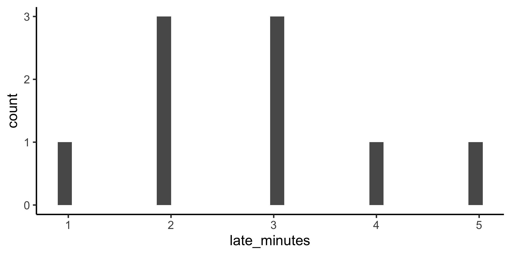
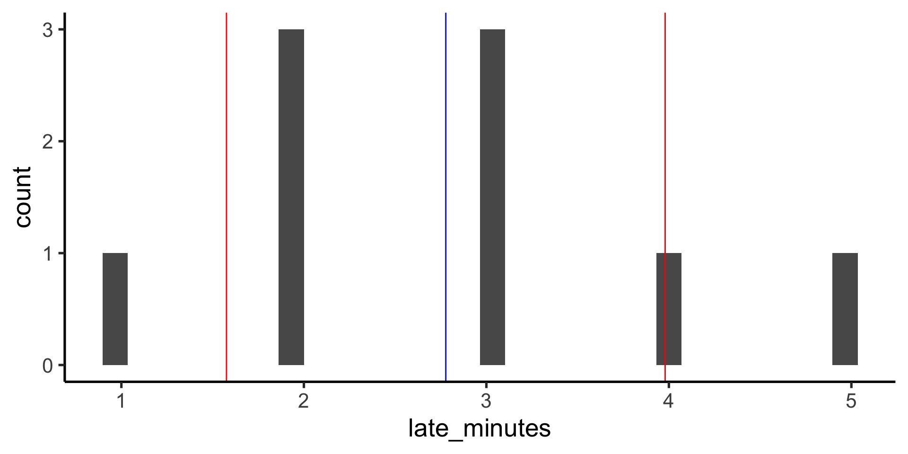
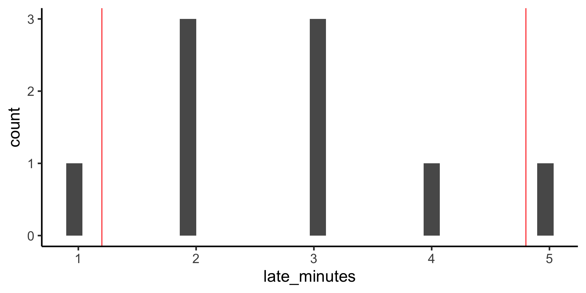

Measure of central tendency describe where a central or typical value might fall
data %>%ggplot(aes(x = late_minutes)) +geom_histogram()
We can get these with group_by() and summarise()
data %>%summarise(n =n(), mean =mean(late_minutes), median =median(late_minutes) )
# A tibble: 1 × 3
n mean median
<int> <dbl> <dbl>
1 9 2.78 3
Variability
Measures of variability which describe the dispersion or spread of values
data %>%ggplot(aes(x = late_minutes)) +geom_histogram()

We can also get these with group_by() and summarise()
data %>%summarise(n =n(), sd =sd(late_minutes), min =min(late_minutes), max =max(late_minutes), lower =quantile(late_minutes, 0.25),upper =quantile(late_minutes, 0.75) )
# A tibble: 1 × 6
n sd min max lower upper
<int> <dbl> <dbl> <dbl> <dbl> <dbl>
1 9 1.20 1 5 2 3
Parametric descriptive statistics
Some statistics are considered parametric because they make assumptions about the distribution of the data (we can compute them theoretically from parameters)
Mean
The mean is one example of a parametric descriptive statistic, where \(x_{i}\) is the \(i\)-th data point and \(n\) is the total number of data points
We can compute this equation by hand to see that the results are the same.
sum(data$late_minutes)/length(data$late_minutes)
[1] 2.777778
Standard deviation
Standard deviation is another paramteric descriptive statistic where \(x_{i}\) is the \(i\)-th data point, \(n\) is the total number of data points, and \(\bar{x}\) is the mean.
# A tibble: 1 × 4
n n_minus_1 sum_sq_dev by_hand_sd
<int> <dbl> <dbl> <dbl>
1 9 8 11.6 1.20
Visualize the mean and sd
How do we visualize the mean and sd on our histogram?
First get the summary statistics with summarise()
(sum_stats <- data %>%summarise(n =n(), mean =mean(late_minutes), sd =sd(late_minutes), lower_sd = mean - sd, upper_sd = mean + sd ))
# A tibble: 1 × 5
n mean sd lower_sd upper_sd
<int> <dbl> <dbl> <dbl> <dbl>
1 9 2.78 1.20 1.58 3.98
Then use those values to plot with geom_vline().
data %>%ggplot(aes(x = late_minutes)) +geom_histogram() +geom_vline(xintercept = sum_stats$mean, color ="blue" ) +geom_vline(xintercept = sum_stats$lower_sd,color ="red" ) +geom_vline(xintercept = sum_stats$upper_sd, color ="red" )

Nonparametric descriptive statistics
Other statistics are considered nonparametric, because thy make minimal assumptions about the distribution of the data (we can compute them theoretically from parameters)
Median
The mean is the value below which 50% of the data fall.
median(data$late_minutes)
[1] 3
We can check whether this is accurate by sorting our data
The IQR is also called the 50% coverage interval (because 50% of the data fall in this range). We can calculate any artibrary coverage interval with quantile()
data %>%summarise(iqr_lower =quantile(late_minutes, 0.025), iqr_upper =quantile(late_minutes, 0.975) )
We can visualize these statistics on our histograms in the same way we did mean and sd:
First get the summary statistics with summarise()
(sum_stats <- data %>%summarise(n =n(), median =median(late_minutes), ci_lower =quantile(late_minutes, 0.025), ci_upper =quantile(late_minutes, 0.975) ))
# A tibble: 1 × 4
n median ci_lower ci_upper
<int> <dbl> <dbl> <dbl>
1 9 3 1.2 4.8
Then use those values to plot with geom_vline().
data %>%ggplot(aes(x = late_minutes)) +geom_histogram() +geom_vline(xintercept = sum_stats$mean, color ="blue" ) +geom_vline(xintercept = sum_stats$ci_lower,color ="red" ) +geom_vline(xintercept = sum_stats$ci_upper, color ="red" )

Probability distributions
A probability distribution is a mathematical function of one (or more) variables that describes the likelihood of observing any specific set of values for the variables.
R’s functions for parametric probability distributions
function
params
returns
d*()
depends on *
height of the probability density function at the given values
p*()
depends on *
cumulative density function (probability that a random number from the distribution will be less than the given values)
q*()
depends on *
value whose cumulative distribution matches the probaiblity (inverse of p)
r*()
depends on *
returns n random numbers generated from the distribution
Uniform distribution
The uniform distribution is the simplest probability distribution, where all values are equally likely. The probability density function for the uniform distribution is given by this equation (with two parameters: min and max).
\(p(x) = \frac{1}{max-min}\)
R’s functions for Gaussian distribution
We just use norm (normal) to stand in for the *
function
params
returns
dnorm()
x, mean, sd
height of the probability density function at the given values
pnorm()
q, mean, sd
cumulative density function (probability that a random number from the distribution will be less than the given values)
qnorm()
p, mean, sd
value whose cumulative distribution matches the probaiblity (inverse of p)
rnorm()
n, mean, sd
returns n random numbers generated from the distribution
rnorm() to sample from the distribution
rnorm(n, mean, sd): returns n random numbers generated from the distribution
When measuring a quantity, the measurement will be different each time. We attribute this variability to noise, any factor that contributes variability in measurement.
Any statistic (e.g. mean) that we compute on a random sample is subject to variability as well; we need to distrust (to some degree) this statistic.
To indicate our uncertainty on our parameter estimate, we can use
standard error (the standard deviation of the sampling distribution; parametric)
confidence intervals (the nonparametric approach to quantify spread)
Bootstrap the sampling distribution
Use infer to construct the probability distribution of the values our parameter estimate can take on (the sampling distribution).
Confidence intervals are the nonparameteric approach to the standard error: if the distribution is Gaussian, +/- 1 standard error gives the 68% confidence internval and +/- 2 gives the 95% confidence interval.
technical interpretation: if we repeated our experiment, we can expect the X% of the time, the true population parameter will be contained within the X% confidence interval.
looser interpretation: we can use the confidence interval as an indicator of our uncertainty in our parameter estimate.